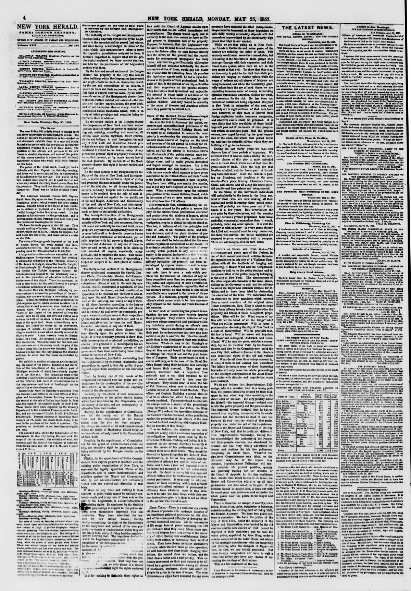

Captain Smith is now in jail in San Domingo in default
https://www.loc.gov/resource/sn83030313/1857-05-25/ed-1/?sp=4

See the original pageVer la página original
During March, the American schooner Charles Hill, commanded by Captain Smith, collided with a Dominican packet, leading to the captain's imprisonment in San Domingo for failing to pay a $3,000 fine for willful damage. Captain Smith has abandoned his schooner to the government, prompting a correspondent in San Domingo City to demand redress from the Cabinet at Washington. Additionally, the excerpt briefly notes that no further outbreaks occurred yesterday following an incident where individuals arriving at a location found only a doorman.
En el curso de marzo, la goleta estadounidense Charles Hill, a órdenes del capitán Smith, colisionó con un paquebote dominicano, motivando la prisión del patrón en Santo Domingo por omitir el pago de una indemnización de 3.000 pesos fijada por perjuicios intencionados. El capitán Smith desamparó su embarcación dejándola en manos del fisco dominicano, induciendo a un corresponsal en la capital a clamar desagravio ante el gabinete de Washington. El suelto añadía sucintamente que no se registraron nuevas alteraciones en la víspera tras un incidente donde varios sujetos acudieron a un paraje hallando únicamente a un portero.
Where this standsEn qué punto está
The full text of this article is still being prepared. Until it is ready, this page carries a summary, the passage found on the page, and the link to the original, which is always one click away.El texto completo de este artículo aún se está preparando. Hasta que esté listo, esta página lleva un resumen, el pasaje encontrado en la página y el enlace al original, que siempre está a un clic.
From the original pageDe la página original
The passage where this article was found, copied from the newspaper page itself, reading errors and all. This is exactly what the summary above is based on.El pasaje donde se encontró este artículo, copiado de la propia página del periódico, con sus errores de lectura y todo. Esto es exactamente aquello en lo que se basa el resumen de arriba.
when they arrived there they found no one there but
the.doorman. They could not, therefore, distinguish
themsme. There was no fur her outbreak yeater
day.
The American schooner Charles Hill, Captain
Smith, from Mayapuez to San Domingo, ran into a
Dominican packet, which crossed her bows, daring
March. Captain Smith is now in jail in San Domingo
in default of payment of a line of $3,000 for
wilful damage1' to the Dominican vessel, lie has
abaadosed his schooner to the government, and a
correspondent in San Domtngo City calls loud y our
the Cabinet at Washington for redress.
We have Bermada papers to the 11th iusL They
oontain nothing of Interest. The whaling bark Seaflower,
which put in at St. Georges for supplies, hsd
sent borne two lots of oil, snd msde sail on a cruise
on the 15th.
The value of foreign goods imported at the port
?r Boston during the week ending 22d inst.,
amoan'ed to $706,707. The Imports of the corresponding
week in 15G amounted to $1,038,780.
A large and attentire audience assembled at the
Madron square Presbyterian cbnrch last evening
to witness the ordination to the Christian minalry
of Mr. Jamts G. Dwigbt, son or the Rev. I>r. Dwight, i
?f Constantinople. Mr. Dwight was born in Turkey,
and speaks the Turkish language fluently. He
intends devoting himself to the missionary cause,
and to the promotion of edncation in Turkey in
<urttoerar.ee of this object. There Is a movement on
foot to miae funds for the estab'Hlnwent of a proper
educational institution at Constantinople
Mechanics' Dall was thronged vesteiday by persona
How to cite this articleCómo citar este artículo
The New York Herald. (1857). New York [N.Y.], May 25, 185725 de mayo de 1857. DR in the American PressRD en la Prensa Norteamericana. Library of Congress, Chronicling America: https://www.loc.gov/resource/sn83030313/1857-05-25/ed-1/?sp=4
ReferencesReferencias
Library of Congress, Chronicling America: The New York Herald, May 25, 185725 de mayo de 1857.
Send an observationEnviar una observación
Does this article connect with your family, your town, or something you know? Did we get something wrong? Write to us. Observations go to the editor's inbox and are read by a person.¿Este artículo conecta con su familia, su pueblo o algo que usted conoce? ¿Nos equivocamos en algo? Escríbanos. Las observaciones llegan al buzón del editor y las lee una persona.
Send observationEnviar observación